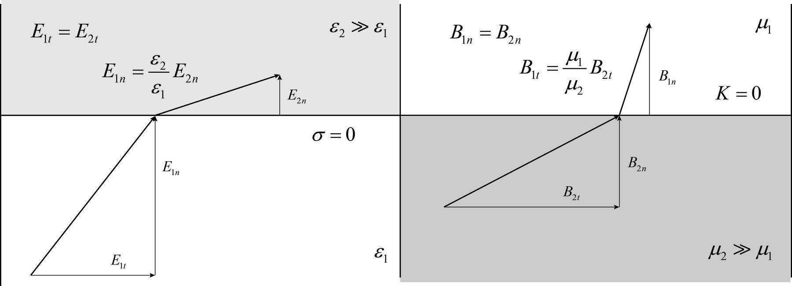

Advanced Control Engineering — lectures and textbooks
Worked MATLAB/Simulink/Simscape examples from the Advanced Control Engineering lectures at MCI (2019–2023, still maintained) and the LaTeX sources of the two companion textbooks.

The lecture projects
Thirty-five worked projects on state-space design, observers, Kalman filtering, LQR/LQI, model predictive control, nonlinear observers, adaptive control and phase portraits, applied to power converters, electrical drives, actuators, vehicles and hydrostatic systems.
Further folders cover a heavy-duty vehicle with hydrostatic powertrain (engine, pumps, motors, blade actuator, anti-stall, battery), a tracked-vehicle driveline, a liquid cooling loop in Simscape Fluids, and an FDTD simulation of a one-dimensional electromagnetic standing wave.
Each project has an initialisation script that designs the controller or observer gains and prints the design checks, one or more Simulink models, and a plotting script that produces the figures used in the lecture notes.
The textbooks
- Advanced Control Engineering: from state-space to nonlinear and optimal methods — linear system theory, Lyapunov, optimal control, least squares, Kalman filtering, MPC, adaptive control, model derivations and eleven control case studies (the same projects as the lecture repository).
- Theory of Electromechanical Devices: collection of main results — Maxwell's equations, magnetostatic field analysis, magnetic circuits and the energy method for electromechanical energy conversion.
- Both are LaTeX
bookdocuments with shared settings; the compiled PDFs are tracked next to the sources.